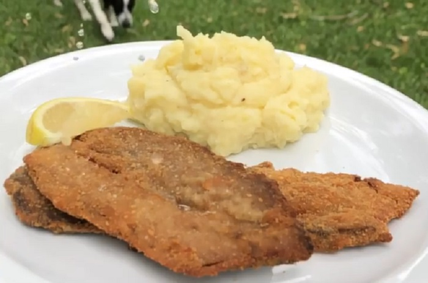

Milanesa

Description:
The milanesa is an Argentinian variation of Italian cotoletta, or schnitzel, where generic types of meat breaded cutlet preparations are known as a milanesa.
The milanesa was brought to the Southern Cone by Italian immigrants during the mass emigration that created the Italian diaspora between 1860 and the 1920s. Its name probably reflects an original Milanese preparation, cotoletta alla milanese, which is similar to the Austrian Wiener Schnitzel.
A milanesa consists of a thin slice of beef, chicken, fish, veal, or sometimes pork. Each slice is dipped into beaten eggs, seasoned with salt, and other condiments according to the cook's taste (like parsley and garlic). Each slice is then dipped in bread crumbs (or occasionally flour) and shallow-fried in oil, one at a time.
Ingredients:
- 2 large eggs, or more as needed
- 40 saltine crackers, smashed
- 4 thin slices boneless round steak
- salt and ground black pepper to taste
- vegetable oil for frying
Steps:
- Crack eggs in a medium bowl and beat slightly with a fork or whisk. Set aside. Place smashed crackers on a plate big enough for the steak.
- Season steak with salt and pepper and soak in the beaten egg. Transfer to the smashed crackers and cover both sides with the crackers using a spoon; you can press a little bit with the spoon so that the crackers stick better.
- Heat a frying pan over medium heat and add enough oil to cover the bottom half of the steaks. Cook 2 steaks in the hot oil until crackers have turned light golden brown, 4 to 5 minutes. Turn and continue to cook until golden and meat is no longer pink, 4 to 5 minutes more. Transfer to a paper towel-lined plate to drain excess oil. Repeat with remaining steaks.
Return to main page.